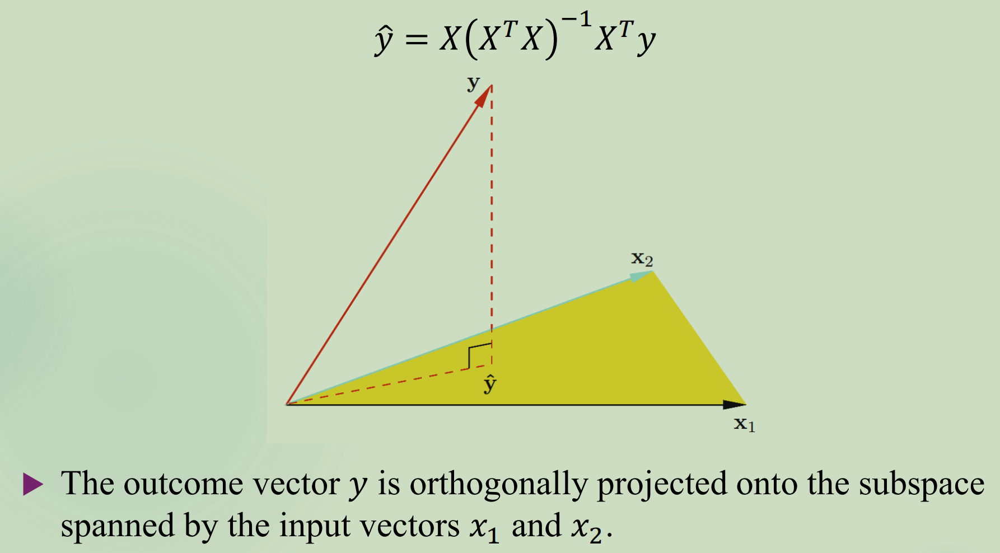

朴素最小二乘法
问题定义
从数据分布 $\mathcal{D}$ 中观测到一组样本 $(\boldsymbol{x}_1,y_1), \dots, (\boldsymbol{x_n},y_n)$, 其中 $\boldsymbol{x}_i = (x_{i1},\dots,x_{ip})$, $y_i\in \mathbb{R}$. 假定 $y_i = f(\boldsymbol{x}_i)+\epsilon$, 我们希望构建函数 $f$ 的近似 $\hat{f}$, 使得对于一个新输入数据 $\boldsymbol{x}$, 我们可以预测 $\hat{y} = \hat{f}(\boldsymbol{X})$.
损失函数： 衡量 $Y$ 和 $\hat{f}(\boldsymbol{x})$ 的差异程度。在线性回归中使用均方误差 $L(Y,\hat{f}(X)) = (Y-\hat{f}(\boldsymbol{X}))^2$.
风险函数： 损失函数在整个分布上的期望 $R(\hat{f}) = E_{D}(Y-\hat{f}(\boldsymbol{X}))^2$. 我们的优化目标是逼近最优预测函数：
经验风险最小化
因为分布 $D$ 是未知的，因此无法直接求得 $R(\hat{f})$. 但是，训练数据 $(\boldsymbol{x_1},y_1),\dots,(\boldsymbol{x}_n,y_n)$ 是从 $D$ 中独立同分布地取出的。因此可以用训练数据上的均值替代分布 $D$ 上的期望：
从而最小均方误差目标变为：
线性回归
设 $f$ 是未知的真实函数，对其施加限制，假定：
其中 $\beta_i$ 是未知参数, $\beta_0$ 为截距。
最小二乘回归
对 $f$ 的估计被简化为对 $\boldsymbol{\beta}$ 的估计。最小二乘回归的任务是估计：
其中 $\boldsymbol{y}$ 为 $n$ 维的因变量向量, $X$ 为 $n\times (p+1)$ 的自变量矩阵, $\boldsymbol{\beta}$ 为 $p+1$ 维的参数向量。
估计 $\boldsymbol{\beta}$
求解 $\boldsymbol{\beta}$ 的闭式解。记：
将 $L$ 对 $\boldsymbol{\beta}$ 求导并等于 0:
闭式解成立的条件为 $X^{T}X$ 满秩。
Hat 矩阵
记：
其中 $H = X\left(X^{T}X\right)^{-1}X^{T}$ 记作 Hat 矩阵，其为正交投影矩阵。
投影矩阵
投影矩阵 $P$ 是任意满足条件 $P^2 = P$ 的方阵。直观意义是，原始空间中任意向量左乘 $P$ 时会被投影到一个子空间，即变为子空间中最接近原向量的向量。任意向量被投影多次的效果和投影一次的效果一致。
正交投影矩阵表示，任意原始空间中的向量被投影到子空间都是“垂直”投影的。例如 $\mathbb{R}^3$ 投影到其中的一个 $\mathbb{R}^2$ 就是正交投影，但是投影到一个有限平面就不是正交投影。正交投影矩阵是满足 $P=P^{T}$ 的正交矩阵。
这是因为取原始空间中任意向量 $y$ 和子空间中任意向量 $z$, 令 $r = y-Py$. 则：
即原向量和投影向量的“残差”和子空间是垂直的。（这证明了充分条件）
顺带一提，正交投影矩阵不一定是正交矩阵。正交矩阵是满足 $Q^{T} = Q^{-1}$ 的矩阵，其列向量、行向量均为一组标准正交基。满足保长度 ($|Qx|^2 = (Qx)^{T}(QX) = x^{T}(Q^{T}Q)x = x^{T}x = |x|^2$) 和保角度 ($(Qx)^{T}(Qy) = x^{T}(Q^{T}Q)y = x^{T}y$). 满足条件的矩阵为旋转变换以及反射变换。
构造正交投影矩阵有几种方式：
- 如果 $u\in\mathbb{R}^n$ 并且 $|u|=1$, 那么 $P=uu^{T}$ 是投影到 $u$ 张成的一维子空间的正交投影矩阵。
- 如果 $U$ 的列向量是一组单位正交基 ($U^{T}U=I$), 那么 $UU^{T}$ 是投影到这组正交基张成的子空间的正交投影矩阵。
- 对于任意的 $n\times p$ 的满秩矩阵 $X$, $P=X(X^{T}X)^{-1}X^{T}$ 是投影到 $X$ 的列向量的正交投影矩阵。
因此显然, Hat 矩阵 $H = X\left(X^{T}X\right)^{-1}X^{T}$ 是一个正交投影矩阵. $\hat{y} = Hy$ 是 $y$ 投影到 $X$ 的列空间的向量（注意 $X$ 的一行表示一个输入向量）。下图为示意图。

$\hat{\beta}$ 的性质
我们通常假设 $\epsilon$ 也是独立同分布的，且 $E(\epsilon)_i = 0$, $\text{Var}(\epsilon_i) = \sigma^2$. 那么：
其中第 3 个等号是因为，如果 $A$ 为常数矩阵，那么 $\text{Cov}(AX) = A\text{Cov}(X)A^{T}$, 第 4 个等号是因为 $X^{T}X$ 是对称矩阵，对称矩阵的逆还是对称矩阵。公式表明，样本量越大，或不同样本之间相关性越小，则 $\hat{\beta}$ 协方差越小。此外，已知 $\hat{y} = Hy$, 定义残差 $e = y-\hat{y} = (I-H)y$, 定义残差平方和：
其中第四个等号是因为 $HX=X$, 第六个等号是因为 $H$ 是正交投影矩阵，从而 $I-H$ 也是正交投影矩阵，从而 $(I-H)^{T}(I-H) = (I-H)^{2} = I-H$. 由于对于任意对称矩阵 $A$ 有 $E(\epsilon^{T} A\epsilon) = \sigma^{2}\text{tr}(A)$, 因此 $E(RSS) = \sigma^{2}\text{tr}(I-H)$. 由于 $P$ 是投影到 $X$ 的列空间的正交投影矩阵，而正交投影矩阵的秩等于对应空间维度 ($p+1$)，因此在 $X$ 列满秩时有 $E(RSS) = (N-p-1)\sigma^2$. 从而一个无偏估计为：
满足 $E(\hat{\sigma})^2 = \sigma^2$.
有如下几个典型平方和：
- $SS_{tot} = \sum_{i=1}^{n}(y_i-\bar{y})^2$
- $SS_{reg} = \sum_{i=1}^{n}(\hat{y}_i-\bar{y})^2$
- $SS_{res} = \sum_{i=1}^{n}(y_i-\hat{y}_i)^2 = SS_{tot}-SS_{reg}$
- $R^2 = 1 - \frac{SS_{res}}{SS_{tot}} = \frac{SS_{reg}}{SS_{tot}}$
$R^2$ 是衡量模型拟合好坏的指标，在最小二乘法（即 $\hat{y}_i = \hat{\beta}_0 + \hat{\beta}_1 x_i$）中, $R^2\in[0,1]$, 一般情况下, $R^2\in(-∞,1]$, 因为这时$SS_{reg}\ne SS_{tot}-SS_{reg}$. 最小二乘法中，该等式成立是由于 $P$ 是正交投影矩阵，从而 $\hat{y}_{i}^{T}((I-P)y_{i})=\boldsymbol{0}$, 从而 $\sum_{i=1}^{n}(y_i-\hat{y}_i)\hat{y}_i = 0$. 另外，由于 $X$ 的列空间包括截距项，即全 1 向量，因此 $\bar{y} = \bar{y}\cdot \boldsymbol{1}$ ($\bar{y}$ 为常数). 因此 $\sum_{i=1}^{n}(y_i-\hat{y}_i)(\hat{y}_i-\bar{y})=0$. 易证上面等式。
令 $R_{j}^{2}$ 是如下线性回归得到的 $R^2$ (将所有自变量的一个维度对所有其他维度线性回归):
令 $S_{x_j}^{2} = \frac{1}{n-1}\sum_{i=1}^{n}(x_{ij}-\bar{x}_{j})^2$. 则有：
其中 $\frac{1}{1-R_{j}^2}$成为方差放缩因子 (variance inflation factor)。我们希望 $\hat{\beta}$ 方差尽量小。方差公式的前一项的分子衡量噪声方差，分母和“量纲”有关，并不关心；而方差放缩因子衡量自变量不同维度的线性相关程度。
Gauss-Markov 定理
定理内容为，假定 $y=X\beta+\epsilon$, 其中 $E(\epsilon)=0$, $\text{Cov}(\epsilon)=\sigma^2I$. 那么如果 $\hat{\beta}$ 是 $\beta$ 的朴素最小二乘估计 (OLS), $\beta^{}$ 是 $\beta$ 的任意其他线性无偏估计（即 $\beta^{}=By$ 且 $E(\beta^*)=\beta$），那么有对于任意 $c\in\mathbb{R}^{p+1}$,
因此 $\hat{\beta}$ 被称为最优线性无偏估计器 (Best Linear Unbiased Estimator, BLUE). 如果带入 $c$ 为任意 one-hot 向量，可以知道 $\hat{\beta}$ 的任意一维方差都是最小的；如果要预测新点 $x^{}=(x_{1}^{},\dots,x_{p}^{})^{T}$, 则可以令 $c = (1,x_1^,\dots,x_p^)$, 那么这个点上 $\hat{y}^ = c^{T}\hat{\beta}$ 方差最小。（方差来源是数据 $y$ 中的 $\epsilon$.）
如果线性模型是正确的，那么最小二乘预测是无偏的，并且拥有所有 $y$ 的线性无偏估计器中最小的方差；但是有可能存在有偏的，方差更小的估计器，
预测准确率
考虑 $\hat{f}(x^)$ 为 $E(Y|x^)$ 的一个估价，那么均方误差 (MSE) 定义为：
其中第二个等号可以将第一行的平方项分解为 $(f(x^) - E(\hat{f}(x^))) + (E(\hat{f}(x^)) - \hat{f}(x^))$ 推出。
一般来说选择估计器需要在方差、偏差之间 trade-off. 增加正则项会导致方差减小，如果对应偏差增加不大的话，就是值得的。（但可能有偏。）